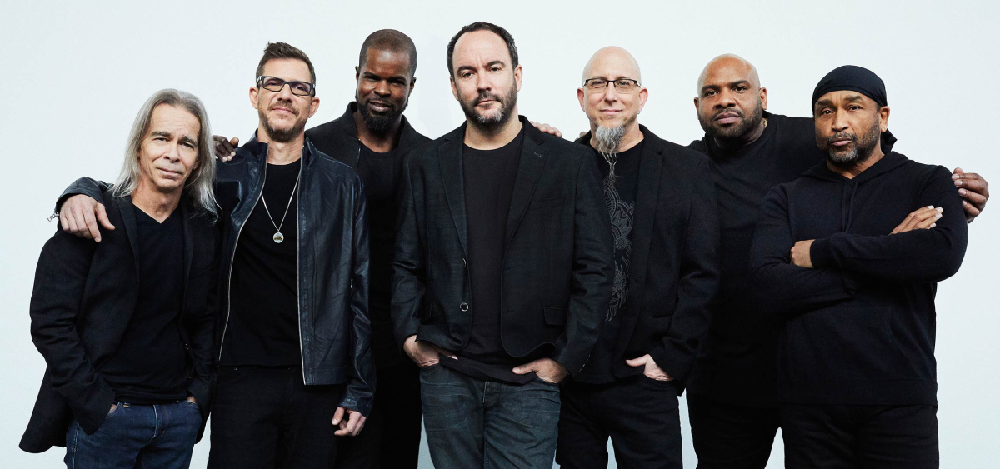

Dave Matthews Band (also known by the initials DMB) is an American rock band formed in Charlottesville, Virginia, in 1991. The band's founding members were singer-songwriter and guitarist Dave Matthews, bassist Stefan Lessard, drummer and backing vocalist Carter Beauford, violinist and backing vocalist Boyd Tinsley, and saxophonist LeRoi Moore. As of 2022, Matthews, Lessard, and Beauford are the only remaining founding members still performing with the band. Dave Matthews Band's 1994 major label debut album, Under the Table and Dreaming, was certified platinum six times. As of 2018, the band had sold more than 25 million concert tickets and a combined total of 38 million CDs and DVDs. Their 2018 album, Come Tomorrow, debuted at No. 1 on the Billboard 200, making DMB the first band to have seven consecutive studio albums debut at the peak. The band won the 1996 Grammy Award for Best Rock Vocal Performance by a Duo or Group for "So Much to Say". A jam band, Dave Matthews Band is renowned for its live shows. The band is known for playing songs differently each performance; this practice has become a staple of their live shows since the early 1990s.
Their current band members are as follows: Dave Matthews (lead vocals, rhythm guitar, acoustic guitar), Stefan Lessard (bass guitar), Carter Beauford (drums, percussion, backing vocals) , Rashawn Ross (trumpet, percussion, backing vocals), Jeff Coffin (saxophone, winds), Tim Reynolds (lead guitar), and Buddy Strong (keyboards, backing vocals).